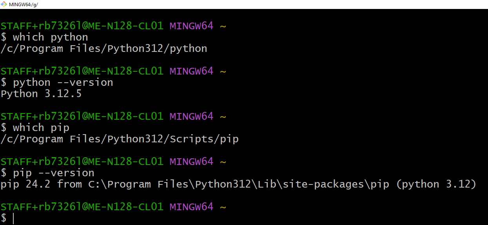
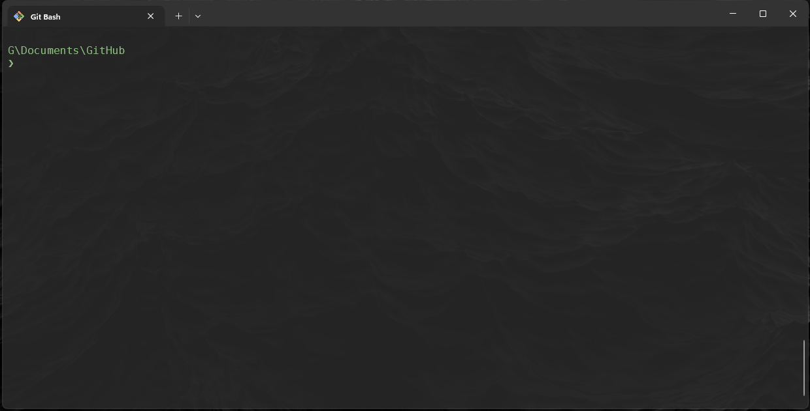
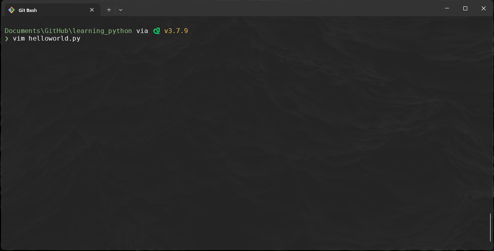

Lab n: Learning Python
We will be doing this lab inconjuction with the Python lecture. Key concepts will be explained and you will put into practice.
0. Interpreter for Python
-
We should not need to do anything for the university machines to run python as this is already part of the PATH, you can run the following commands:
$ which python $ python --version $ which pip $ pip --versionOutput: 
So let's make our first program.
Exercises 1. Hello World
-
Frist we need to create a directory and file, call directory
learning_pythonand create a file in side it calledhelloworld.py:
-
Modify the files content to contain the following:
def main(): print("Hello World!") print("Goodbye World!") if __name__=="__main__": main()
Exercise 2: Variables and Data Types
Instructions:
-
Create a new file called
variables.py -
Create a variable called
nameand assign it your name as a string. -
Create a variable called
ageand assign it your age as an integer. -
Create a variable called
heightand assign it your height in meters as a float. -
Print each variable on a new line.
-
and then run it.
name = "Your name" age = 25 height = 1.75 print(name) print(age) print(height)$ python variables.py > Your name > 25 > 1.75
Exercise 3: Basic Operations
Instructions:
-
Create a new file call it
basicMaths.py -
Create two variables,
aandb, and assign them any two numbers. -
Perform and print the results of addition, subtraction, multiplication, and division between
aandb. -
Use the modulus operator to find the remainder of
adivided byband print the result. -
and then run it.
a = 10 b = 3 print("Addition:", a + b) print("Subtraction:", a - b) print("Multiplication:", a * b) print("Division:", a / b) print("Modulus:", a % b)$ python basicMaths.py > Addition: 13 > Subtraction: 7 > Multiplication: 30 > Division: 3.3333333333333335 > Modulus: 1
Exercise 4: Lists and Indexing
Instructions:
-
Create a new file called
lists.py -
Create a list called
fruitsthat contains the following fruits:"apple","banana","cherry". -
Print the first fruit in the list.
-
Add a new fruit
"orange"to the list and print the updated list. -
Remove
"banana"from the list and print the list again. -
and then run it
fruits = ["apple", "banana", "cherry"] print("First fruit:", fruits[0]) fruits.append("orange") print("Updated list:", fruits) fruits.remove("banana") print("List after removing banana:", fruits)$ python lists.py > First fruit: apple > Updated list: ['apple', 'banana', 'cherry', 'orange'] > List after removing banana: ['apple', 'cherry', 'orange']
Exercise 5: Conditional Statements
Instructions:
-
Create a file called
conditionals.py -
Write a program that checks if a number is positive, negative, or zero.
-
Assign a value to the variable
numberand useif,elif, andelseto print:"Positive"if the number is greater than 0"Negative"if the number is less than 0"Zero"if the number is exactly 0.
-
and then run it.
-
change 5 to 0 and run again
number = 5 if number > 0: print("Positive") elif number < 0: print("Negative") else: print("Zero")python conditionals.py Positive python conditionals.py Zero
Exercise 6: Loops
Instructions:
-
Create a file called
loops.py -
Write a
forloop that prints numbers from 1 to 5. -
Create a list of your favorite colors and use a
forloop to print each color. -
Write a
whileloop that prints numbers from 10 down to 1. -
run the program
# For loop to print numbers from 1 to 5 for i in range(1, 6): print(i) # For loop to print each favorite color favorite_colors = ["blue", "green", "red"] for color in favorite_colors: print(color) # While loop to print numbers from 10 down to 1 n = 10 while n > 0: print(n) n -= 1$ python loops.py > 1 > 2 > 3 > 4 > 5 > blue > green > red > 10 > 9 > 8 > 7 > 6 > 5 > 4 > 3 > 2 > 1
Exercise 7: Functions
Instructions:
-
Create a new file called
functions.py -
Write a function called
greetthat takes a name as a parameter and prints"Hello, <name>!". -
Write a function
squarethat takes a number as a parameter and returns its square. -
Test both functions by calling them with sample inputs.
def greet(name): print(f"Hello, {name}!") def square(number): return number ** 2 # Testing the functions greet("Alice") print("Square of 4:", square(4))$ python functions.py > Hello, Alice! > Square of 4: 16
Exercise 8: Dictionaries
Instructions:
-
Create the a file called
dictionaries.py -
Create a dictionary called
studentwith keys:name,age, andcourses. Assign appropriate values to each. -
Print the student's name and age.
-
Add a new key
graduation_yearwith a sample year and print the updated dictionary. -
and run it.
student = { "name": "Your name", "age": 21, "courses": ["Subject1", "Subject2"] } print("Name:", student["name"]) print("Age:", student["age"]) student["graduation_year"] = 2025 print("Updated student dictionary:", student)$ python dictionaries.py > Name: Your name > Age: 21 > Updated student dictionary: {'name': 'Your name', 'age': 21, 'courses': ['Subject1', 'Subject2'], 'graduation_year': 2025}